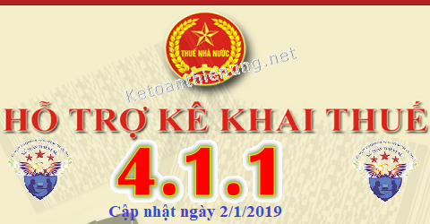
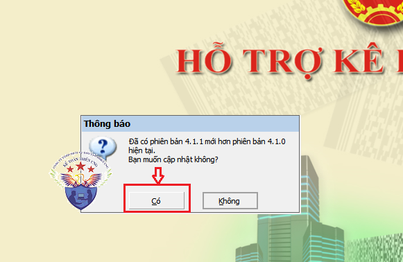
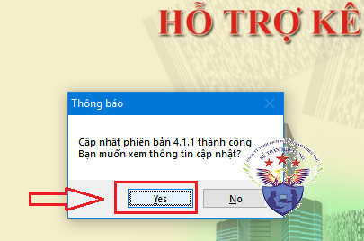

Phần mềm hỗ trợ kê khai HTKK 4.1.1 mới nhất ngày 2/1/2019 của Tổng cục thuế. Tải phần mềm HTKK 4.1.1 miễn phí tại đây, phần mềm kê khai thuế mới nhất năm 2019.
Ngày 02/01/2019 Tổng Cục thuế thông báo về việc Nâng cấp ứng dụng Hỗ trợ kê khai (HTKK) theo kiến trúc và công nghệ mới phiên bản 4.1.1
TỔNG CỤC THUẾ THÔNG BÁO
V/v: Triển khai ứng dụng Hỗ trợ kê khai (HTKK) phiên bản 4.1.1 đáp ứng yêu cầu hợp nhất Chi cục Thuế trực thuộc Cục Thuế tỉnh Cà Mau theo Quyết định số 1868/QĐ-BTC ngày 12/10/2018 của Bộ trưởng Bộ Tài chính
Tổng cục Thuế thông báo triển khai ứng dụng HTKK phiên bản 4.1.1 đáp ứng Quyết định số 1868/QĐ-BTC ngày 12/10/2018 của Bộ trưởng Bộ Tài chính về việc hợp nhất Chi cục Thuế trực thuộc Cục Thuế tỉnh Cà Mau, đồng thời cập nhật một số lỗi/yêu cầu nghiệp vụ phát sinh khi triển khai phiên bản 4.1.0, cụ thể như sau:
1. Cập nhật tên Chi cục Thuế trực thuộc Cục Thuế tỉnh Cà Mau trong danh mục cơ quan thuế của các chức năng liên quan trên ứng dụng HTKK, cụ thể:
| STT |
Tên cơ quan thuế trước khi sáp nhập |
Tên cơ quan thuế sau khi sáp nhập |
| 1 | Chi cục Thuế huyện Năm Căn | Huyện Năm Căn - Chi cục Thuế khu vực I |
| 2 | Chi cục Thuế huyện Ngọc Hiển | Huyện Ngọc Hiển - Chi cục Thuế khu vực I |
2. Cập nhật một số lỗi và yêu cầu nghiệp vụ phát sinh của ứng dụng HTKK phiên bản 4.1.0
- Chức năng kê khai Tờ khai lệ phí môn bài: Cập nhật kỳ tính thuế cho phép kê khai tờ khai năm lớn hơn năm hiện tại.
- Chức năng kê khai Tờ khai thuế nhà thầu nước ngoài (01/NTNN, 03/NTNN): Cập nhật chức năng trợ giúp hướng dẫn kê khai chỉ tiêu “Ngày thanh toán”.
---------------------------------------------------------------------------------------
Chú ý: Bắt đầu từ ngày 03/01/2019, khi lập hồ sơ khai thuế, tổ chức, cá nhân nộp trên phạm vi toàn quốc sẽ sử dụng ứng dụng HTKK 4.1.1 để kê khai thay cho các phiên bản trước đây.

----------------------------------------------------------------------------------------
Tải phần mềm kê khai thuế HTKK 4.1.1 tại đây:

Để cài đặt được HTKK 4.1.1, máy tính của NNT cần đáp ứng thông số sau:
- Hệ điều hành WinXP (SP2, SP3), Win 7 trở lên… (không hỗ trợ hệ điều hành iOS, Mac).
- Máy tính có cài .NET Framework 3.5 trở lên (có thể tải bộ cài .NET Framework 3.5 tại đây).
- Nếu máy tính sử dụng hệ điều hành Win 7 trở lên không phải cài đặt .NET Framework 3.5 mà chỉ cần kích hoạt .NET Framework 3.5 đã tích hợp sẵn theo tài liệu hướng dẫn cài đặt tại đây
- Hệ điều hành WinXP (SP2, SP3), Win 7 trở lên… (không hỗ trợ hệ điều hành iOS, Mac).
- Máy tính có cài .NET Framework 3.5 trở lên (có thể tải bộ cài .NET Framework 3.5 tại đây).
- Nếu máy tính sử dụng hệ điều hành Win 7 trở lên không phải cài đặt .NET Framework 3.5 mà chỉ cần kích hoạt .NET Framework 3.5 đã tích hợp sẵn theo tài liệu hướng dẫn cài đặt tại đây
-----------------------------------------------------------------------------------------------
- Hoặc liên hệ trực tiếp với cơ quan Thuế địa phương để được cung cấp và hỗ trợ trong quá trình cài đặt, sử dụng.
- Mọi phản ánh, góp ý của tổ chức, cá nhân nộp thuế được gửi đến cơ quan Thuế theo các số điện thoại, hộp thư điện tử hỗ trợ NNT về ứng dụng HTKK do cơ quan Thuế cung cấp.
Tổng cục Thuế trân trọng thông báo./.
-----------------------------------------------------------------------------------------------
- Trường hợp: Máy tính các bạn đã cài phần mềm HTKK 4.1.0 thì chỉ cần Mở phần mềm HTKK 4.1.0 lên.
--> Rồi phần mềm sẽ hiển thị Thông báo -> Bạn bấm nút “Có”, đợi phần mềm chạy là xong nhé.

Đợi phần mềm HTKK chạy cập nhất là xong.

Kế toán Diệu Tâm chúc các bạn thành công!
--------------------------------------------------------------------------------------------